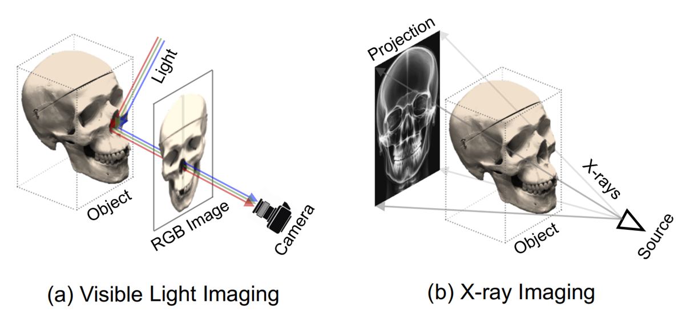
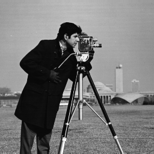
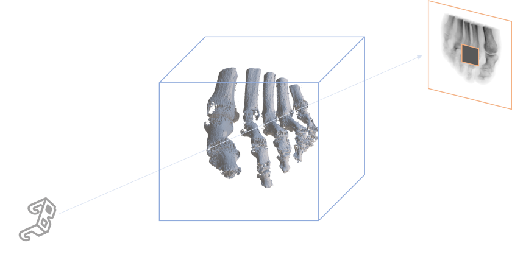
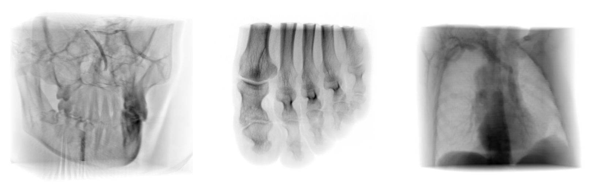
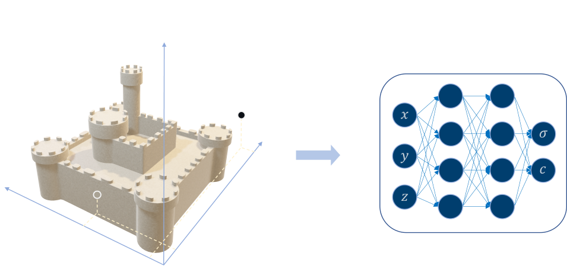
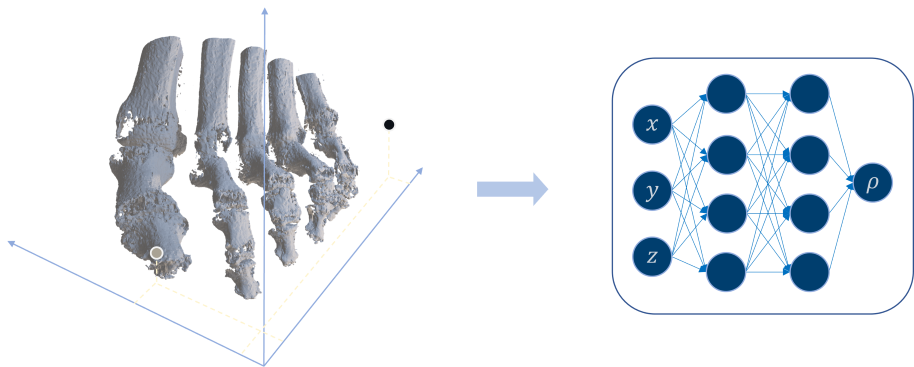
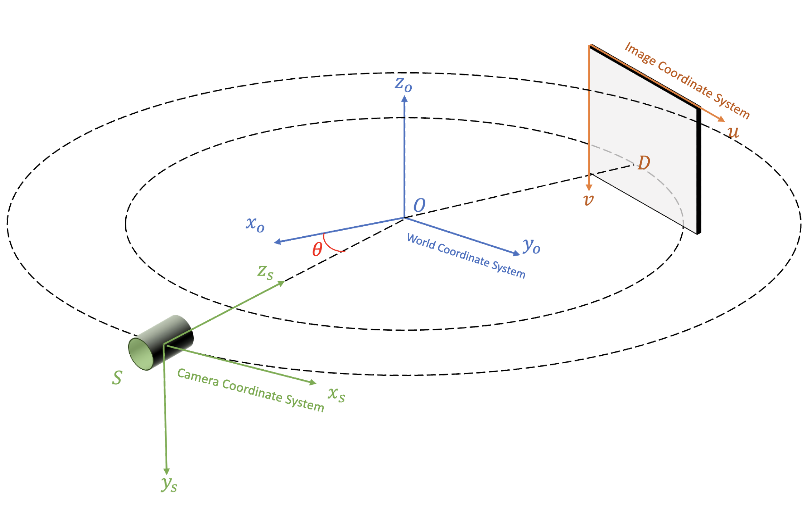
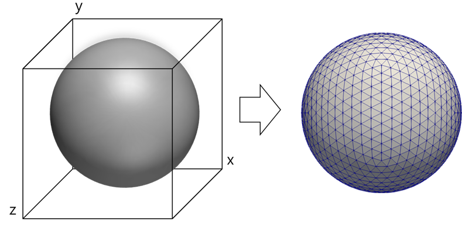
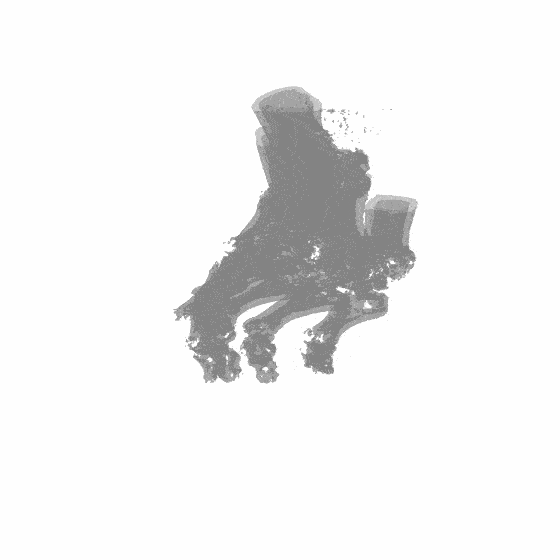

TL; DR. In this article, we will explore how to apply radiance fields technique (NeRF and Gaussian Splatting) beyond photometric domain. Also, I will post the short tip for the quick development of the NeRF / GS viewer which has no official viewer.
Introduction
Recently, I had the serendipitous opportunity to explore how Neural Rendering could be applied within the medical domain, specifically in Tomography (X-ray), referencing SAX-NeRF.
Unlike photography, which captures the reflection of visible light, tomography constructs images based on signals that have penetrated a substance. In tracing the authors' investigative process of how to adapt the standard Neural Rendering setting for Tomography, I was able to deepen my abstract intuition and comprehension of Neural Rendering.
In this post, I aim to elucidate the foundational intuitions behind Neural Rendering, NeRF, and GS through a personal review of SAX-NeRF. Additionally, I will offer insights into a technique for creating a simple web viewer using viser when an official viewer is unavailable.
1. Tomography vs. Photography
1.1. Photography
- What are the underlying physical principles of the act of 'seeing'?
'Seeing' physically denotes the process where light emitted from a source interacts with an object, causing the object's surface to absorb or reflect specific wavelengths (or energy) of light. The unabsorbed, reflected light then reaches the observer's eye (or detection device), leading to visual perception.
This process encompasses the interaction between light and an object (absorption and reflection) and the subsequent transmission of the interaction's result to the observer's visual system.
Neural Rendering and Novel View Synthesis primarily focus on scenes 'observed within the visible light spectrum'. Consequently, the standard NeRF rendering equation (emission-absorption ray casting) mathematically represents the intuition behind the act of 'seeing'.
$$ C(r) = \int_{t_n}^{t_f} T(t) \cdot \sigma ({\rm \textbf{r}}(t)) \cdot c({\rm \textbf{r}}(t), {\rm \textbf{d}} ) \ dt $$
$$ \text{where }T(t) = \text{exp} \bigg( - \int_{t_n}^{t}\sigma ({\rm \textbf{r}}(s)) ds \bigg ) $$
In this equation, $C(r)$ represents the final accumulated color along a ray. The constituent components of the equation are interpreted as follows:
- $\textbf{r}(t)$ : Represents the ray of light.
- $\sigma ({\rm \textbf{r}}(t))$: The density (opacity) or absorption coefficient at a point $t$ along the ray, indicating the extent of interaction between the ray and the object.
- $c({\rm \textbf{r}}(t), {\rm \textbf{d}})$: The color of the light reflected by the object at that point. (d is used to reflect view-dependent color.)
- $T(t)$: The accumulated transmittance, indicating whether previously encountered objects blocked (opaque) or allowed passage (transparent) of the ray.
Thus, NeRF's rendering equation mathematically formalizes the process of visual object perception. By integrating all elements of the physical light-object interaction (absorption, reflection, transparency, etc.), NeRF calculates the cumulative contribution of light along the ray path to ultimately generate an image.
1.2. Tomography
So, what considerations are necessary for applying Neural Rendering to domains outside the visible light spectrum?
A quintessential example in this domain is Tomography, including X-ray and CT scans. Tomography utilizes X-rays, which have shorter wavelengths (and higher energy) than visible light. Instead of reflection, the process is based on the penetration of X-rays through an object and the attenuation of the light's intensity by the object's internal density. This contrasts with the reflection-based nature of visible light, and the internal structure of the object is reconstructed by analyzing the intensity of the light that passes through and reaches the detector.
In Tomography, this penetration and attenuation process is modeled by the Beer-Lambert Law, which is specifically expressed as:
$$ I_\text{gt}(\mathbf{r}) = I_o \cdot \exp \left ( - \int_{t_n}^{t_f} \rho(\mathbf{r}(t)) dt \right ) $$
- Here, $I_\text{gt}(\mathbf{r})$ is the final intensity measured by the detector, and $I_0$ is the initial intensity value.
- $\rho$ is the radiodensity value, representing the degree to which X-rays are attenuated.
The resemblance of the exponential term is notable. It exhibits an identical form to the Accumulated Transmittance equation used in NeRF modeling. In fact, both terms share the fundamental assumption that the degree of intensity reduction is proportional to both the current light intensity and the opacity at the current point.
The underlying intuition regarding light intensity in this modeling is further elucidated by the following derivation:
* Derivation of Beer-Lambert Law (which mirrors the derivation of Accumulated Transmittance)
$$ I_\text{gt}(\mathbf{r}) = I_o \cdot \exp \left ( - \int_{t_n}^{t_f} \rho(\mathbf{r}(t)) dt \right ) $$
$$ \rightarrow \ln(I_\text{gt}(\mathbf{r}) ) - \ln (I_o) = - \int_{t_n}^{t_f} \rho(\mathbf{r}(t)) dt $$
$$ \rightarrow \int_{t_n}^{t_f } \frac{1}{I(\mathbf{r}(t))} dI(\mathbf{r}(t)) = - \int_{t_n}^{t_f} \rho(\mathbf{r}(t)) dt $$
$$ \rightarrow \frac{1}{I(\mathbf{r}(t))} dI(\mathbf{r}(t)) = -\rho(\mathbf{r}(t)) dt $$
$$ \therefore \frac{d}{dt}I(t) = -I(t)\cdot \rho(t) $$
The reconstruction of a NeRF model from Tomography data necessitates the substitution of the conventional emission-absorption ray casting with a rendering equation grounded in the Beer-Lambert Law.
The ultimate intensity rendering term is expressed in a discretized form, analogous to that in NeRF, as follows:
$$ I_{pred}(\mathbf{r}) = I_0 \cdot \exp\left(-\sum_{i=1}^{N} \rho_i \delta_i\right) $$
2. Modeling
Returning our focus to NeRF, while variations such as Hash Grid NeRF and TensoRF exist, the fundamental principle of NeRF is to parameterize and represent a 3D scene.
When this parameterization is achieved through an MLP, it is classified within the NeRF family, whereas the utilization of explicit 3D Gaussians or 2D Gaussian surfels aligns it with the Gaussian Splatting methodology.
Conventionally, these parameter models are designed to receive a 3D Cartesian Coordinate $(x,y,z)$ as input, subsequently producing the density and color $(\sigma, c)$ at the specified location.
However, the rendering equation pertinent to Tomography necessitates the radiodensity $\rho$ as opposed to $(\sigma, c)$. Consequently, the application of NeRF to Tomography mandates a distinct modeling strategy compared to that employed in Photography.
Given that the rendering equation for Tomography, adapted based on the Beer-Lambert Law, exhibits sole dependency on radiodensity $\rho$, a Tomography-NeRF model can be architected to accept a 3D Cartesian Coordinate $(x,y,z)$ as input and exclusively generate $\rho$ as the output.
Subsequently, SAX-NeRF introduces an alternative design, favoring a Transformer architecture over an MLP to accommodate X-Ray specific attributes, and incorporating ray-wise locality inductive bias within the attention mechanism. However, considering this aspect to be of secondary importance to the central discussion, I will proceed without further elaboration. Readers seeking further details are encouraged to consult the original publication.
3. Quick Viewer Development Tip
3.1. Viser Viewer
While the code for SAX-NeRF is publicly available, it lacks an official viewer. Consequently, the basic visualization code provided is limited, necessitating the implementation of a viewer for more interactive exploration of the results.
To interactively visualize a NeRF/GS model, certain key elements are required:
- Information about the viewing angle of the 3D scene ($[\mathbf{R|t}]$).
- Rays generated from that angle.
- Rendering (applying the rendering equation).
Typically, the implementation of elements 2) and 3) is less challenging, provided that the corresponding code is publicly accessible. However, camera coordinate systems can vary across projects, particularly between OpenGL and OpenCV, which often leads to errors. Therefore, it is crucial to generate rays specifically tailored to the project being implemented.
Another challenge lies in the difficulty of custom implementing 1) to control the scene as desired. Fortunately, viser, developed by the NeRFStudio team, offers a remarkably easy solution. A 2D Gaussian Splatting viewer I developed previously also utilized this viser project.
Below is a very simple SAX-NeRF viewer implemented using viser. This implementation utilizes the nerfview package, which provides minimal features within the viser project.
from typing import Tuple
import time
import viser
import nerfview
import tyro
import os
import torch
import numpy as np
import argparse
import matplotlib.pyplot as plt
from src.network import get_network
from src.encoder import get_encoder
from src.config.configloading import load_config
from src.render import render
def normalize(img):
max_val = img.max()
min_val = img.min()
return (img - min_val) / (max_val - min_val)
@torch.no_grad()
def make_rays(K, c2w, img_wh, dsd=1.5, device='cuda'):
H, W = img_wh
pose = create_sax_pose_from_camera(c2w, DSO=1.0)
i, j = torch.meshgrid(torch.linspace(0, W - 1, W, device=device),
torch.linspace(0, H - 1, H, device=device), indexing="ij")
uu = (i.t() + 0.5 - W / 2) * 0.001
vv = (j.t() + 0.5 - H / 2) * 0.001
dirs = torch.stack([uu / dsd, vv / dsd, torch.ones_like(uu)], -1)
rays_d = torch.sum(torch.matmul(pose[:3,:3], dirs[..., None]).to(device), -1)
rays_o = pose[:3, -1].expand(rays_d.shape)
rays = torch.cat([rays_o, rays_d,
torch.full_like(rays_o[..., :1], 0.904),
torch.full_like(rays_o[..., :1], 1.1)], dim=-1)
return rays.reshape(-1, 8)
@torch.no_grad()
def create_sax_pose_from_camera(c2w: torch.Tensor, DSO: float):
forward_vector = c2w[:3, 2]
angle = np.arctan2(forward_vector[1], forward_vector[0])
phi1 = -np.pi / 2
R1 = np.array([[1.0, 0.0, 0.0],
[0.0, np.cos(phi1), -np.sin(phi1)],
[0.0, np.sin(phi1), np.cos(phi1)]])
phi2 = np.pi / 2
R2 = np.array([[np.cos(phi2), -np.sin(phi2), 0.0],
[np.sin(phi2), np.cos(phi2), 0.0],
[0.0, 0.0, 1.0]])
R3 = np.array([[np.cos(angle), -np.sin(angle), 0.0],
[np.sin(angle), np.cos(angle), 0.0],
[0.0, 0.0, 1.0]])
rot = np.dot(np.dot(R3, R2), R1)
trans = np.array([DSO * np.cos(angle), DSO * np.sin(angle), 0])
# rot = c2w[:3, :3].T
# trans = np.array([DSO, DSO, 0])
pose = np.eye(4)
pose[:-1, :-1] = rot
pose[:-1, -1] = trans
return torch.tensor(pose, dtype=torch.float32, device='cuda')
class NerfViewer:
def __init__(self, args):
self.args = args
os.environ["CUDA_DEVICE_ORDER"] = 'PCI_BUS_ID'
os.environ["CUDA_VISIBLE_DEVICES"] = args.gpu_id
self.cfg = load_config(args.config)
self.device = torch.device("cuda")
self.dsd_value = 1.5
self.clm_colors = torch.tensor(plt.cm.get_cmap("turbo").colors, device="cuda")
self.network = get_network(self.cfg["network"]["net_type"])
self.cfg["network"].pop("net_type", None)
self.encoder = get_encoder(**self.cfg["encoder"])
self.model = self.network(self.encoder, **self.cfg["network"]).to(self.device)
self.model_fine = None
n_fine = self.cfg["render"]["n_fine"]
if n_fine > 0:
self.model_fine = self.network(self.encoder, **self.cfg["network"]).to(self.device)
ckpt = torch.load(args.weights)
print(ckpt["epoch"])
self.model.load_state_dict(ckpt["network"])
if n_fine > 0:
self.model_fine.load_state_dict(ckpt["network_fine"])
self.model.eval()
self.render_W = args.size
self.render_H = args.size
@torch.no_grad()
def render_fn(self, camera_state: nerfview.CameraState, img_wh: Tuple[int, int]) -> np.ndarray:
W, H = img_wh
render_img_wh = (self.render_W, self.render_H)
c2w = camera_state.c2w
K = camera_state.get_K(img_wh)
rays = make_rays(K, c2w, render_img_wh, self.dsd_value, device=self.device)
chunk_size = 1048576
num_rays = rays.shape[0]
all_imgs = []
for i in range(0, num_rays, chunk_size):
start = i
end = min(i + chunk_size, num_rays)
rays_chunk = rays[start:end]
rendered_chunk = render(rays_chunk, self.model, self.model_fine, **self.cfg["render"])["acc"]
all_imgs.append(rendered_chunk)
img = torch.cat(all_imgs, dim=0).reshape(self.render_H, self.render_W, 1)
img = img.repeat(1, 1, 3)
img = torch.nn.functional.interpolate(img.unsqueeze(0).permute(0, 3, 1, 2), size=(H, W), mode='bilinear', align_corners=False).squeeze(0).permute(1, 2, 0)
img = (normalize(img.cpu().numpy()) * 255).astype(np.uint8)
return img
def update_dsd(self, value):
self.dsd_value = value
def config_parser():
cat = 'foot'
parser = argparse.ArgumentParser()
parser.add_argument("--gpu_id", default="0", help="gpu to use")
parser.add_argument("--method", default=f"Lineformer", help="name of the tested method")
parser.add_argument("--category", default=f"{cat}", help="category of the tested scene")
parser.add_argument("--config", default=f"config/Lineformer/{cat}_50.yaml", help="path to configs file")
parser.add_argument("--weights", default=f"pretrained/{cat}.tar", help="path to the experiments")
parser.add_argument("--output_path", default=f"output", help="path to the output folder")
parser.add_argument("--vis", default="True", help="visualization or not?")
parser.add_argument("--size", default=256)
return parser
def main(args):
nerf_viewer = NerfViewer(args)
with torch.no_grad():
server = viser.ViserServer(verbose=True, port=9123, )
_ = nerfview.Viewer(server=server, render_fn=nerf_viewer.render_fn, mode='rendering')
dsd_val = server.add_gui_slider(
"DSD",
min=0.1,
max=2.0,
step=0.05,
initial_value=nerf_viewer.dsd_value,
)
@dsd_val.on_update
def _(_) -> None:
nerf_viewer.update_dsd(dsd_val.value)
while True:
time.sleep(1.0)
if __name__ == "__main__":
parser = config_parser()
args = parser.parse_args()
tyro.cli(lambda: main(args)) Captured Results:

As demonstrated, a viewer for a new NeRF / GS model can be quickly created with minimal coding. I initially considered uploading this to GitHub, but due to its simplicity, I will only include it in this blog post.
3.2. Marching Cube Extraction
Another method for interactively examining a NeRF / GS scene is by using scalar field to polygonal mesh conversion algorithms, such as marching cubes.
However, it is important to note that standard NeRF or GS models, which are not specifically designed for surface reconstruction like 2D GS or SDF, may not align perfectly with conventional mesh conversion algorithms. The density field obtained from NeRF or GS represents a volumetric density rather than a clear surface. Therefore, the extracted mesh might appear noisy or require careful tuning of the isosurface value.
This should be considered as a supplementary approach for gaining a rough geometric understanding of the scene.
Below is an example code snippet for generating a simple mesh from SAX-NeRF using scikit-image:
from skimage import measure
import trimesh
from src.config.configloading import load_config
from src.network import get_network
from src.encoder import get_encoder
from src.render import render, run_network
# init model
'''
load SAX NeRF model, see: test.py in SAX-NeRF
'''
# make voxel
voxel_size = 128
x, y, z = np.mgrid[:voxel_size, :voxel_size, :voxel_size]
x = (x - (voxel_size - 1) / 2) / (voxel_size / 2)
y = (y - (voxel_size - 1) / 2) / (voxel_size / 2)
z = (z - (voxel_size - 1) / 2) / (voxel_size / 2)
voxel = np.stack([x, y, z], axis=-1)
voxel /= 16
# marching cube
threshold = 0.4
voxel_estimated = run_network(voxel, model_fine if model_fine is not None else model, netchunk)
voxel_estimated = voxel_estimated.squeeze(dim=-1).cpu().numpy()
verts, faces, _, _ = measure.marching_cubes(voxel_estimated, level=threshold)
mesh = trimesh.Trimesh(vertices=verts, faces=faces)
mesh.export("output.obj") 
Concluding Remarks
Through the exploration of SAX-NeRF, we've seen how the foundational principles of Neural Rendering can be adapted beyond the realm of traditional photography. By understanding the underlying physical phenomena, such as the Beer-Lambert Law in tomography, we can modify the rendering equation and model architecture to suit different imaging modalities. This adaptation underscores the abstract nature of Neural Rendering and its potential applicability across various scientific domains.
Ultimately, the ability to apply Neural Rendering to diverse data types and the ease with which we can now visualize these results opens up exciting possibilities for future research and applications across various fields.
You may also like,
- Instant-NGP Review & Re-Implementation
- Why Positional Encoding Makes NeRF more Powerful
- A Comprehensive Analysis of Gaussian Splatting Rasterization